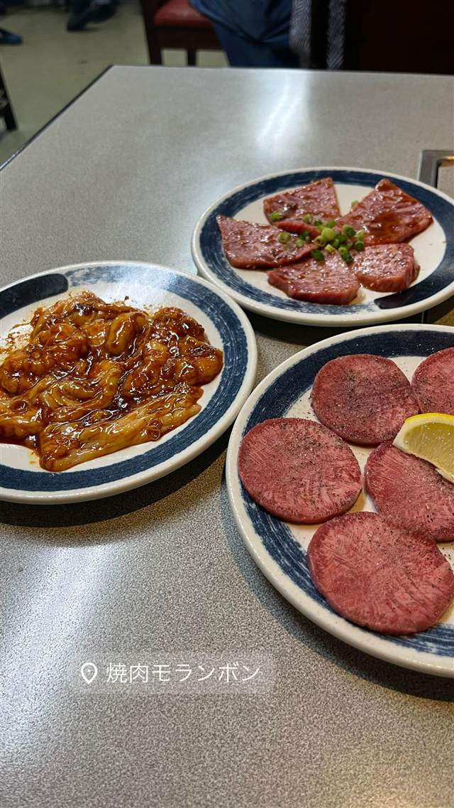

焼肉 · 焼肉 · 三河島
焼肉 モランボン
済州島コミュニティの三河島で三代続く、名物コサリスープ
焼肉モランボン
WHY GO
済州島系住民が集う三河島の郷土料理コサリスープを三代続く家族経営で守る
済州島出身者のコミュニティが根付く三河島で、店主の母が創業してから約40年、兄を経て三代目が継ぐ町焼肉の老舗。大きめにカットした肉と秘伝の味付け、名物のコサリスープが評判で、2016年にはdancyu誌の焼肉特集でも紹介された。
TRIVIA
豆知識
- 三河島は済州島出身者のコミュニティが根付く「都内最古のコリアンタウン」の一つ
- 名物のコサリスープはぜんまいたっぷりのピリ辛スープ
REVIEWS
世間の評判
3.61食べログ
厚切り肉の質と昭和レトロな空間
- 上ハラミや上タン塩、コブクロ刺しなど肉の質の高さを評価する声が多い
- 昭和レトロな雰囲気を残す町焼肉らしい空間が魅力という声がある
- 肉を焼く煙が店内にこもりやすく、匂いが気になるという声もある
食べログ 口コミ186件
| 創業 | 店主の母が創業し約40年、その後兄を経て三代目が継承（創業年不詳） |
|---|---|
| 看板 | コサリスープ、塩・タレの焼肉 |
| こだわり | 大きめにカットした肉と秘伝の味付けが特徴 |
| 掲載・評価 | 2016年dancyu誌の焼肉特集「焼肉は東をめざせ！」で三河島の代表店として紹介 |
| どこから | 都心 |
| 営業時間 | 月 休み 火〜日 16:00-22:30 |
| 予算 | 昼 ¥3,000～¥3,999 夜 ¥6,000～¥7,999 |
| 定休日 | 月曜 |
| 予約 | 予約可 |
| 場所 | 三河島駅 東京都荒川区東日暮里3-42-9 |
食べたもの：焼肉
NEARBY
近い店・同じ系統の店
-
 ★
焼肉 白金高輪駅
炭焼 金竜山
ロンドン帰りの店主夫妻が焼く上タン塩とシャトーブリアン
夜 ¥20,000～¥29,999
★
焼肉 白金高輪駅
炭焼 金竜山
ロンドン帰りの店主夫妻が焼く上タン塩とシャトーブリアン
夜 ¥20,000～¥29,999
-
 ★
焼肉 関内駅
関内苑 本店
韓国職人仕込みのキムチとA5和牛の手打ち冷麺
昼 ¥1,000～¥1,999
★
焼肉 関内駅
関内苑 本店
韓国職人仕込みのキムチとA5和牛の手打ち冷麺
昼 ¥1,000～¥1,999
-
 ★
焼肉 鶯谷駅
焼肉 鶯谷園
1968年創業、半世紀以上続く良心価格の厚切りタン
夜 ¥6,000～¥7,999
★
焼肉 鶯谷駅
焼肉 鶯谷園
1968年創業、半世紀以上続く良心価格の厚切りタン
夜 ¥6,000～¥7,999
-
 ★
焼肉 不動前
焼肉しみず
牛タンの中心部だけを使う厚切り黒毛和牛タン
夜 ¥10,000～¥14,999
★
焼肉 不動前
焼肉しみず
牛タンの中心部だけを使う厚切り黒毛和牛タン
夜 ¥10,000～¥14,999
-
 ★
焼肉 飯田橋駅
好ちゃん 飯田橋本店
食べログ百名店に6年連続選出されたホルモン焼肉
夜 ¥6,000～¥7,999
★
焼肉 飯田橋駅
好ちゃん 飯田橋本店
食べログ百名店に6年連続選出されたホルモン焼肉
夜 ¥6,000～¥7,999
-
 ★
焼肉 町屋
正泰苑 総本店
ザガット東京焼肉部門1位に輝いた熟成タン
夜 ¥6,000～¥7,999
★
焼肉 町屋
正泰苑 総本店
ザガット東京焼肉部門1位に輝いた熟成タン
夜 ¥6,000～¥7,999